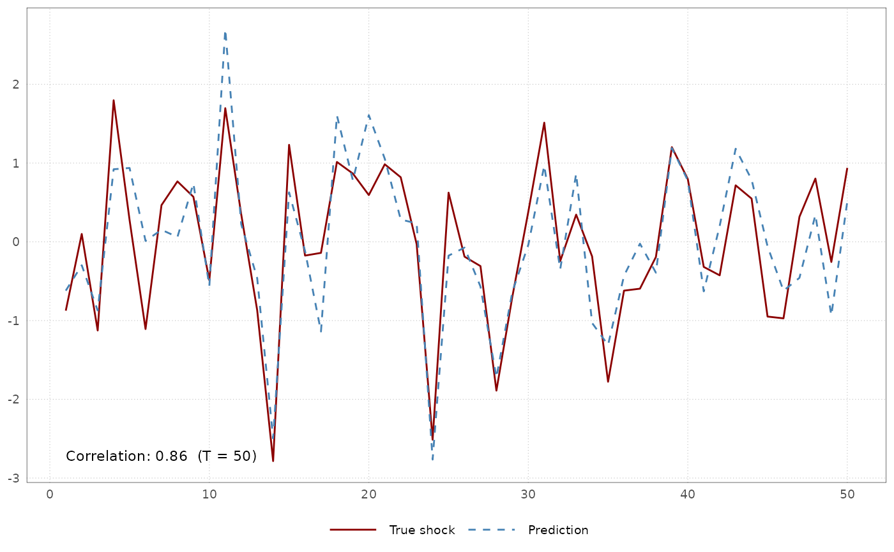
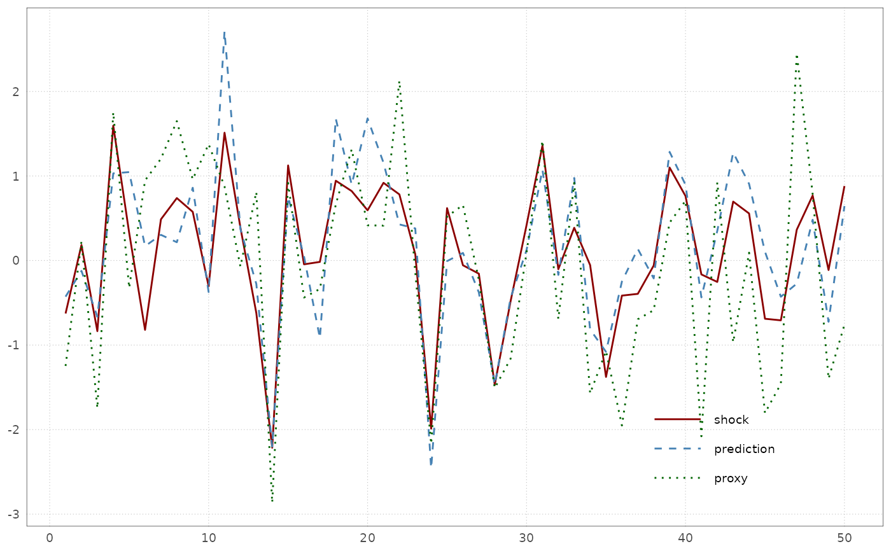

Line plot of any number of series against a common x-axis variable (for example time, or a parameter varied in a simulation), with one colour and line type per series and a single legend. Optionally standardises the series and, for two series, reports their correlation in the panel.
Usage
plotseries(
data,
x_var = NULL,
series = NULL,
colors = c("darkred", "steelblue", "darkgreen", "black", "orange", "purple"),
linetypes = c("solid", "dashed", "dotted", "dotdash", "longdash", "twodash"),
x_lab = NULL,
y_lab = NULL,
standardize = FALSE,
show_cor = FALSE,
show_n = TRUE,
digits = 2,
legend_position = "bottom",
linewidth = 0.5,
xlim = NULL,
ylim = NULL,
file = NULL,
width = 7,
height = 4
)Arguments
- data
A data frame with one column for the x-axis and one column per series. Alternatively, a time series object (or a named list of time series objects) supported by the
tsboxpackage, which is converted to a data frame with the x-axis columntime; this requirestsboxto be installed.- x_var
Character. Name of the x-axis column. Defaults to the first column of
data.- series
Character vector with the names of the columns to plot. If the vector is named, the names are the column names and the values are the legend labels. The order determines the legend order. Defaults to all columns except
x_var.- colors, linetypes
Vectors with at least one entry per series.
- x_lab, y_lab
Character or
NULL. Axis labels.- standardize
Logical. If
TRUE, every series is demeaned and divided by its standard deviation before plotting. DefaultFALSE.- show_cor
Logical. If
TRUE, the correlation of the series on their common sample is printed in the lower left corner of the panel. Requires exactly two series. DefaultFALSE.- show_n
Logical. If
TRUE(default), the number of common observations is added to the correlation label.- digits
Integer. Number of digits of the correlation label.
- legend_position
Character such as
"bottom"(default) or"none", or a numeric vector of length 2 with the position inside the panel in relative coordinates.- linewidth
Numeric. Line width.
- xlim, ylim
Numeric vectors of length 2 or
NULL. Axis limits; the plot is zoomed without dropping observations outside the limits.- file
Character or
NULL. If notNULL, the plot is saved to this file withggplot2::ggsave().- width, height
Numeric. Size of the saved figure in inches.
See also
plotirf() for impulse responses.
Examples
set.seed(1)
d <- data.frame(t = 1:50, shock = rnorm(50))
d$prediction <- d$shock + rnorm(50, sd = 0.5)
d$proxy <- d$shock + rnorm(50, sd = 1)
# Two series with their correlation
plotseries(d, x_var = "t", series = c(shock = "True shock", prediction = "Prediction"),
standardize = TRUE, show_cor = TRUE
)

# Three series, legend inside the panel
plotseries(d, legend_position = c(0.8, 0.15))
